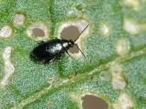
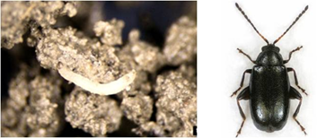

| Home |
| CRUCIFEROUS VEGETABLES |
MAJOR PESTS |
| 1. Diamond back moth |
| 2. Leaf webber |
| 3. Cabbage semilooper |
| 4. Cabbage butterfly |
| 5. Cabbage borer |
| 6. Mustard sawfly |
| 7. Cabbage aphid |
| 8. Cabbage flea beetle |
| Questions |
| Download Notes |
CRUCIFEROUS VEGETABLES :: MAJOR ::CABBAGE FLEA BEETLE
8. Cabbage flea beetle: Phyllotreta cruciferae (Chrysomelidae: Coleoptera)
Distribution and status: Europe, USSR, North and South America, Australia, japan and India.
Host range: Mustard, raya, taramira, toria, radish, turnip, cabbage, cauliflower, knoll-khol dahlia, sweet sultan, antirrhinum and sweet peas.
Damage symptoms
Adult beetle feeds on the leaves by making round holes. The stem, flower and even pods may also be attacked. Decaying odour is emitted by the cabbage plants.
|  |
Bionomics
The female beetle lays 50-80 creamy white eggs singly in the soil around the host plants. Egg period 5 -10 days. The larva is dirty white in colour and 5mm in length. Larval period 9-15 days. Pupal period 2-4 days. Adult beetle is metallic blue with greenish hue. Beetle measures 1.8 -2.0 mm. There are 7-8 generations in a year.
|  |
Management
Spray 2.5 kg of carbaryl 50 WP or 2 L of endosulfan 35 EC in 750 litres of water per ha.